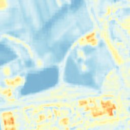
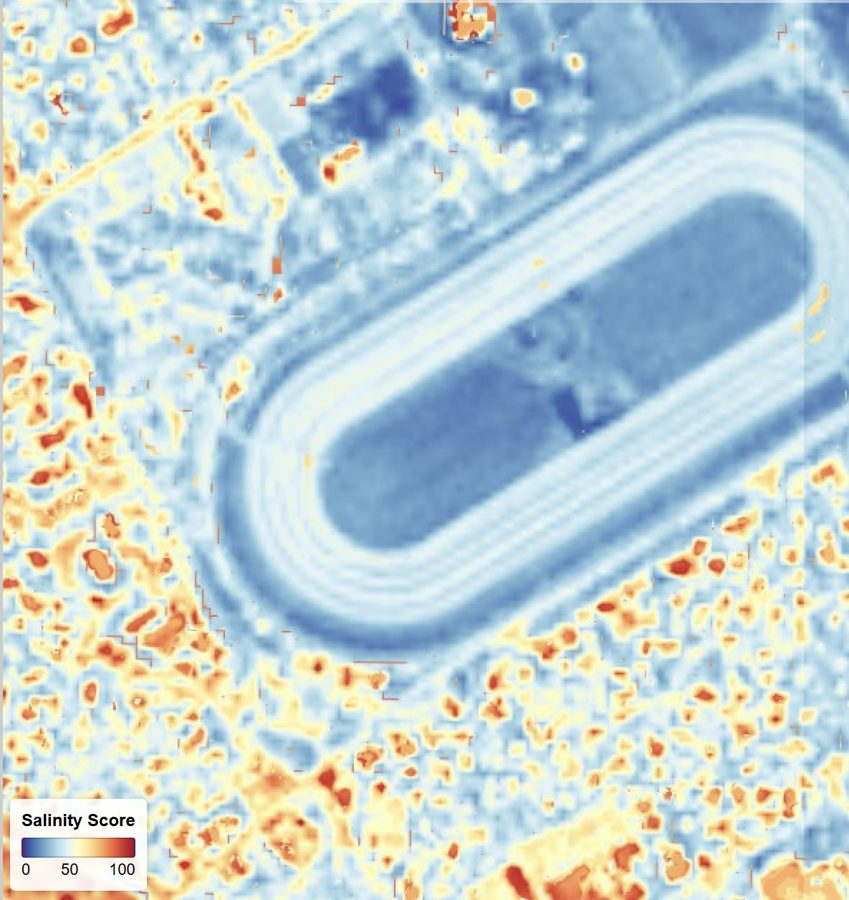

Both at 2 m from enhanced multispectral — a moisture composite correct from bare soil to dense canopy, and salinity as a 0–100 score with standard classification.
Soil moisture and salinity govern irrigation efficiency and long-term productivity, but ground sensors sample points and coarse satellite products blur out within-field variation. SkySpera derives both at 2 m. The moisture composite stays correct across the full range from bare soil to dense canopy, where single-index approaches break down; salinity is reported as a 0–100 score with standard classification. At field-section resolution the products reveal stress developing along irrigation lines, salt accumulation creeping in from field edges, and drainage problems — early enough to act.



Tell us the ground you need to watch — we'll show you what SkySpera can do with it.
Talk to us